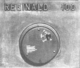

Cleaning Up Wood Heat For 1982-83
With the chill of autumn rapidly settling in and woodpiles beckoning, it's time to look at . . .
By the Mother Earth News editors
September/October 1982
PART I: INTRODUCTION
Last autumn, when we printed our article "Woodstove Smoke" (see issue 72, page 72), we were able to report on a number of interesting developments that - it was hoped - would help solve the related problems of woodburning emissions, creosote, and efficiency. Since then, many of the experimental technologies discussed in that story have produced readily available items . . . and an interest in marketing clean, efficient products seems to have penetrated the mainstream of the wood-heating industry.
In the hurry to get new stoves into stores, however, the industry's research - though still extensive - simply hasn't born as much fruit this year as it did last. Still, we'd like to use this heating season's report to update the developments mentioned in last year's story . . .tell you about a few interesting new items . . . and detail some work we've been doing ourselves!
SECONDARY COMBUSTION
As you may remember, woodstove smoke can be cleaned by a system that burns it outside the primary firebox. Secondary combustion - as the process is called - has been under study for several years now . . .and a number of products are, in 1982, using it in attempts to improve efficiency and reduce pollution. The most fanfare thus far has gone to Jøtul's new model 201, which was introduced in February. Independent laboratory testing has confirmed the Norwegian company's claims of an overall efficiency between 75 and 80% (as compared to a conventional Jøtul's rating of 55 to 60%). The small heater is now available, at Jøtul dealers, for less than $1,000.
Several other residential space heaters, and one woodburning boiler, are also using secondary combustion or wood gasification (which could be seen as the same process carried to extremes). Unfortunately, many of the companies manufacturing these appliances are small and can't afford the expensive testing which would serve to confirm or deny any claims for the success of their designs. (Some of our staff members, however, have seen the Essex Thermodynamics boiler in operation . . .and were quite impressed.)
CATALYSTS
A catalytic combuster is a device that causes secondary combustion to occur at lower temperatures than would ordinarily be possible. The honey-combed cells, which can be designed into conventional stoves or even added - as aftermarket items - to existing models, have been popular with manufacturers because the relatively simple devices offer some efficiency improvement for a minimum of retooling cost. Consequently, there are better than 20 companies selling catalytic combuster-equipped products.
On the other hand, the steadily increasing volume of test data is beginning to show that a catalytic combuster can't be expected to operate at its full potential unless very careful attention is paid to its design. In fact, researchers are coming to the conclusion that a catalyst will be very effective at increasing efficiency and reducing emissions only if it's able to "light off" smoke at the cool temperatures encountered in residential appliances (which are usually operated with their drafts restricted).
The Condar Company, for one, has dedicated a lot of effort to achieving ignition in a catalyst at low burn rates. The firm's design - which was developed over the last two years by Dr. Stockton Barnett and tested extensively through the winter of 1981-82 - was licensed to Blaze King and American Eagle in June, and production models should be available by late fall of this year. According to testing done by Barnett in several extensively monitored homes, the prototype stoves are capable of maintaining a heating efficiency of about 80% at burn rates of some 2-1/2 pounds of wood per hour.
Of course, catalytic combusters will be beyond the reach of many folks as a result of the cost that they add to the woodburners that are sold already equipped with them. In general, a catalyst stove will run at least $250 more than would a comparable heater without such a device. Fortunately, though, there are ways to own a catalytic combuster without buying a whole new stove.
Regular readers of this magazine may recall the cooperative research project that we entered into, last year, with Shelton Energy Research. In MOTHER NOS. 73 and 74 we reported Shelton's testing of three addon devices . . . all of which are said to reduce creosote accumulation. One of those products, the Penn Stove Smoke Dragon, is an add-on catalytic combuster, which now sells for $390. And, since our results were released, the manufacturers of another product included in the test (the Smoke Consumer by Lincoln Works) have introduced their own retrofit catalyst device. Furthermore, Energy Harvesters, Riteway, and Shenandoah all make catalytic combuster kits for their stoves.
However, a lot of folks will want to know the name of the least expensive complete heater that's equipped with a catalytic combuster. Well, to our knowledge, the Webster Stove Foundry Hearth Cat - which sells for $529 - holds that honor.
HIGH TURBULENCE
The last method of clean, efficient woodburning we discussed back in issue 72 was that typified by high-temperature, forcedcombustion-air furnaces. To date, no other woodburning heater has been able to equal this technique - which was developed by Dr. Richard Hill at the University of Maine - for low carbon monoxide and particulate emissions. Of course, since these units do burn their fuel quickly and store the heat produced (usually in water), they aren't likely to be manufactured as space heaters. There are, however, at least two U.S.-based companies building different-sized furnaces using this technology.
TOMORROW?
For the time being, the woodstove industry's supply of research money seems to be limited as a result of the hard times the manufacturers have seen over the last few years. Still, there are more and more people involved who are dedicated to the development of cleaner, more efficient woodburning heaters, and we have little doubt that we'll be seeing some exciting new ideas before long.
PART II: THE CONDAR STOVETEMP THERMOSTAT
In wood heaters equipped with manual draft regulators, the quantity of air available for combustion will - unless the owner constantly changes the intake setting - be pretty much an average of the amount needed to maintain even heating during all the different stages of the burn. What's more, though there might be a fixed setting on the inlet air control, a woodburner can suddenly either flare up or smolder - depending on the conditions inside the firebox - and provide more or less heat than its owner intended. Consequently, many manufacturers equip their stoves with thermostatically controlled draft regulators.
Unfortunately, most such original-equipment thermostats use slow-reacting bimetallic coils to control their damper flaps, which often produce oscillating burns. Because there's so much delay in the reaction of such a valve, the stove will tend to overheat and underheat in a continuous cycle.
The Condar Stovetemp thermostat was designed to react to changes in stove door temperature quickly enough to effectively eliminate such oscillations. According to the manufacturers, their product - when installed on a heater that was previously operated with a manual control - can reduce fuel consumption by as much as 20% . . . both because the overall combustion efficiency of the woodburner will be improved by the device's ability to admit the right amount of air for the selected operating temperature, and because the output of the stove can be more effectively tuned to meet the demand. (Overheating, of course, causes increased BTU losses from a building . . . and thus reduces heating efficiency.)
One of MOTHER's staff members installed a Stovetemp on his Waterford Reginald 100 in the fall of 1981 and was able to compare the quantity of wood consumed through the 1981-82 heating season to that used the winter before. After taking into account differences in weather and in the amount of conventional backup heat used, he estimates that 15% fewer pounds of wood were burned with the thermostat in place. Furthermore, because the stove to question is rather small for the amount of space heated (2,600 square feet), the draft regulator was adjusted for full opening at times . . . which no doubt reduced its ability to conserve fuel.
In addition to the fact that it saved wood, the Stovetemp was very convenient to use. Our staffer found that fiddling with the heater was cut to a minimum. In fact, through all but the coldest days of the winter, it took only three fuel loadings per 24 hours - and adjustments for output in the morning and evening - to keep the stove producing at the desired rate. In addition, the thermostat made it possible, on occasion, to tune the stove for amazingly low combustion levels. Extending the burn time to more than 12 hours required only that the temperature knob be set in the 250°F area!
The Stovetemp thermostat can be fitted to many (but not all) woodstoves, and it mounts with one stud and a wing nut. Our staff member/tester feels that the Stovetemp, at $39.95, is a worthwhile investment (and would be even if it offered no more than convenience). You can purchase one from any stove dealer who carries Condar products . . . or you can order a unit directly from the manufacturer (Dept. TMEN, Box 6, Hiram, Ohio 44234) for the price mentioned above plus $1.50 shipping and handling.
PART III: A SLACK TEMPERATURE WOODSTOVE THERMOSTAT
After reading our report on the Condar Stovetemp, you likely understand why we became interested in exploring the potential of automatic draft regulation for woodburners. In fact, that particular product - along with some very educational conversations with its designer, Dr. Stockton Barnett - inspired us to start tinkering on our own.
Through the late spring and early summer of this year, some of our staffers - headed by independent researcher B.V. Alvarez - have been working on a new type of thermostat. We feel that B.V. has made a real breakthrough, and he'd like to share the design (shown on page 43) with MOTHER'S readers. The device that we're about to describe sits atop a mighty pile of test models that didn't quite make it, too . . .and, perhaps partly as a result of its trial and error evolution, it's a bit different in concept from any other woodstove control that we've seen. At this point, the thermostat has been through 30 days of testing in our lab, and we're pretty satisfied with its performance. Still, it being mid-July as this is written, we naturally haven't been able to run the control through a heating season in a home. However, our testing thus far leads us to believe that we may be onto something . . .but let us tell you the whys and hows concerning the construction of our thermostat, and then you can decide.
CONCEPT
Judging from the testing done by the Condar people on their draft control, we were able to assume that the success of a woodstove thermostat hinges on its ability to react very quickly to temperature changes. With that notion in mind, we decided that it might be advantageous to use the temperature within the heater, rather than that of the metal on the stove body, to control our thermostat . . .since steel or iron takes some time to react to changes in the condition of the blaze inside the firebox.
We then decided to place our temperature sensor inside the chimney . . . in order to avoid the inaccurate readings that could be caused by localized burn conditions inside the firebox. (We reasoned that the stack gas temperature should reflect the average state of the fire below.) After trying a number of different techniques for sensing heat and driving a valve, we determined to use air as the working medium. A tube placed inside the chimney is heated by the smoke, and air inside that cylinder expands in proportion to the degree of warmth surrounding it. The sensor is connected to a diaphragm-driven valve positioned on the stove's door (though the valve could be located almost anywhere on the heater's body) by a length of 1/8" nylon tubing.
To provide a means of adjustment, we added a second diaphragm, which is controlled by a knob. By moving the rubber membrane in or out, we can alter the volume - and therefore the pressure - in the system. During normal operation, the sensor will be under a slight vacuum, since residual tension in the control diaphragm closes the valve at atmospheric pressure.
The thermostat is first tuned in by operating the stove at the highest desired temperature (with the door open slightly to admit additional air) . . .turning the adjustment diaphragm knob so that there's maximum volume in the chamber . . .and then plugging in the tubing. Once the door is closed, the stove will begin to cool ... because the valve will be lightly closed at atmospheric pressure. Then, as the stack gases cool, the pressure will drop in the system, and the valve will be drawn open. The net result is that the thermostat will maintain a smoke temperature between 10 and 20°F cooler than the initial setting.
Now, to reduce the stove's operating temperature, the adjustment knob can be turned counterclockwise to decrease chamber volume and increase pressure. The valve will then close and remain shut until the sensor cools enough to reduce pressure to the valve's opening point. Once an output level has been selected, the valve will respond to changes in pressure as small as a quarter-inch of water column . . . which corresponds to a rise or fall in temperature of 2 °F. Furthermore, it will begin to move nearly as quickly as a temperature change could be registered on a thermocouple thermometer. Consequently, the valve will have to move only a small distance to control output at normal operating temperatures, and the fire condition can be controlled in very small increments.
We've run our thermostat at a sampling of burn rates varying from 1-1/4 to 4-1/2 pounds of air-dry maple per hour. At the lower settings, the device is able to hold stack temperature to within 5°F above or below the desired level. However, at the higher burn rates, control does degenerate to plus-or-minus 10°F smoke temperature. Any such fluctuation is generally quite short-lived, though, and the readings will almost always settle back to the desired number within five minutes.
CONCERNS
To achieve the accuracy that our unit is capable of, it was very important that the friction in the system be kept low. Therefore, though the assembly process for the thermostat isn't difficult, it's absolutely imperative that the holes in which the control shaft rides be correctly aligned. The system must be leakproof, too, and we suggest that you test the sensor and the diaphragm assembly (lightly pressurize them with an air hose - at no more than 5 PSI - and submerge them in water) before installation.
Remember also that the location of the sensor will directly affect the temperatures that it will "see" at different burn rates. The midpoint of our sensor is 36 inches above the top of the stove . . . but bear in mind that different heater designs can change the relationship of stack temperature to distance up the flue. It's quite possible to position the sensor and operate the system totally by "feel", but we've found it much easier to have a thermometer to guide us.
While much of our testing was monitored by thermocouples and an electronic thermometer, we've used two other sorts of stack temperature gauges as well: Taylor Instruments' probe-type thermometers (retail: $25), and surface temperature thermometers (from either Taylor Instruments or Condar Co. for $11.95). We should mention, though, that the internal probe thermometer reacts much more quickly than the surface-reading units, and it's necessary to wait several minutes after a temperature change occurs in the firebox before expecting that difference to be indicated by a surface thermometer.
HOW TO BUILD IT
With the foregoing guidelines in mind, you can follow the assembly sequence for the components.
[1] Remove - using a hacksaw - the vacuum chambers from two Standard Plus VC-24A (retail: $5.60) distributor advance diaphragms (common to most 60's GM V-8 engines), and take out the springs. Then file the cut surfaces flat and deburr the edges so that they won't harm the diaphragms. Go on to hacksaw through each diaphragm's shaft at a point next to the 90° bend in the end, and file the cuts smooth.
[2] Take one diaphragm and saw of the bracket just ahead of the spot-welded tabs that mount it to the diaphragm body. (Be careful not to damage the shaft.) Set the bracket aside for later use, and file the tabs on the housing smooth.
[3] Grasp the shaft of the same diaphragm in smooth-jawed locking pliers (or an equivalent tool) and thread the shaft, with an 8-32 die, to a point 7/8 inch from the diaphragm. Then cut the shaft to a length of 1-1/4" (leaving 3/8" of thread).
[4] Take the second diaphragm and cut off the bracket at the point where it narrows - just beyond the bolt holes - then file the remaining part smooth, thread its shaft with the 8-32 die for 1-1/8", and discard the leftovers.
[5] Locate the piece of bracket that you cut from the first diaphragm, and saw it off at the index dimples in the broad section and, again, at a point 1/2 inch up the narrower portion. Then bend the piece 90° at the narrowing point, and drill a 5/32" hole in the center of the tab. This component will be attached to the outside of the remaining piece of bracket on the second diaphragm (using two 10-32 X 3/8" screws and nuts), so the 5/32" hole must align the shaft. Slip a 7/32"-O.D. X 2" spring (Balkamp No. 770-2123, available at NAPA stores for 50 cents), cut to length, over the shaft on the second diaphragm and attach the 90° bend bracket.
[6] Silver-solder (with 3/32" prefluxed 45% silver solder, Balkamp No. 770-2560, retail: 800) an 8-32 nut to the inside of a 3/8" fender washer. This will serve as the adjustment knob, and should be threaded onto the adjustment diaphragm that was assembled in Step 5.
[7] Trim the threaded portion off a No. 50/52 Gold Seal hose clamp to leave 7-1/2" of solid (unslotted) metal. Bend the strap, forming a 2-1/4"-diameter circle by overlapping its ends half an inch. Then clamp the hoop in locking pliers and drill a 1/8" X 1" hole through the center of the overlapped area. Silver-solder a 1/8" X 1" tube into the bore, and fill between the overlapped ends with the material at the same time.
[8] Place two drops of two-hour-set epoxy on each diaphragm's plunger shaft end, to seal the junction between the shafts and the metal washers that the rubber is attached to. Go on to epoxy the two diaphragm housings to the 2-1/4"-diameter, 1/2"-wide ring. Set the assembly aside to dry.
[9] Cut out two 5 "-diameter metal disks (we used 1/16" aluminum, but other metals of similar strength would be acceptable) . . . clamp the two plates together . . . and drill three 3/16" holes, positioned 1/4 inch in from the perimeter and evenly spaced around the circles. Then bore a 5/32" hole exactly in the middle of the joined disks. Deburr the holes, and mark each plate for position during assembly.
[10] Bolt the two disks together, spacing them with a 10-32 nut and six 3/16" flat washers on each 10-32 X 1-1/2" screw.
[11] Check the squareness of the two 5/32" holes by slipping the shaft of the control diaphragm through them. Then lubricate the holes and shaft with light grease, epoxy the tabs on the control diaphragm to the plate, and let the assembly dry.
[12] Drill a 5/32" hole in the center of a clean one-quart paint can lid (they're usually available free from paint stores), and attach it to the control diaphragm shaft with two 8-32 nuts. (The sealing lip of the lid should seat against the stove when the finished unit is installed.)
[13] Mount the assembly to your heater, either by drilling the door or by attaching it to an adapter plate that screws to the mount for your old damper. Position the thermostat at whatever distance from the sealing surface causes the valve to be pushed in 1/16 inch. This level of pressure insures shutdown in the event of a leak in the system.
[14] Bend the sensor - which consists of a 4" length of 1/2"-I.D. soft copper tubing - 180°, on a 2" radius, at the 2-foot point (using a spring-type tubing bender available for less than $2.00 at most hardware stores) and then 90°, on a 4" radius, at each end . . . so that the ends point at right angles to the plane of the rest of the tubing.
[15] Crimp 1/2" of each end of the tube - either by using a vise or by hammering - then drill a 1/8" hole in the side of the 1/2" pipe, insert the end of a 1/8" X 11 " (or long enough to reach a point where the temperature will never be higher than 250°F) copper tube, and silver-solder the crimps and the tube junction. These joints will be outside the stovepipe during operation to prevent any possibility of deterioration.
[16] Cut a 1"-high, 5"-wide slot in your stovepipe at a point 12" above the location at which you've been checking stack temperatures. (If you're working by guess, try cutting the slot 4 feet up . . . but be prepared to try again if you don't get enough adjustment range.)
[17] Plumb the sensor tube to an appropriate length of 1/8" nylon tubing, using 1/8" windshield-washer hose. You can also prepare the connector hose for the diaphragm end, but don't attach it just yet.
[18] Turn the adjustment knob clockwise until the chamber is set at maximum volume.
[19] Light a fire in the stove and leave the door(s) cracked until you see a stack temperature, of about 400 °F on the internal probe thermometer (or about 300°F on a surface temperature thermometer . .. or what seems like a pretty hot fire if you're guessing). At that point, connect the last tubing junction and close the doors.
[20] Turn the adjustment knob to achieve the desired heat output.
HOW WARM FOR HOW LONG
We've recorded the heat being given off by our thermostat-equipped stove in an insulated room, and have found that stable stack temperature correlates closely (but not exactly) with steady heat production. By watching door temperature, we've noted that the stove reaches a slightly higher surface temperature about two-thirds of the way through a burn. A thermostat controlled by door temperature wouldn't allow this to happen, but we doubt that most folks will even be able to detect the small change in heat output involved.
Though we've run our stove at burn rates of as low as 1-1/4 pounds of wood per hour, it's unlikely that many people will be interested in outputs that low. Of course, a load of wood lasts for a very long time at such a rate (we've run 16 hours on one fuel charge and don't doubt that we could go longer), but the heat given off by the stove is minimal . . . while creosote accumulation is dramatic!
Judging from our own experience and from published information, most home woodstoves are run at burn rates of between 2 and 4 pounds per hour, which is the range at which our thermostat does its job best. If however, your heater is substantially different in volume and/or design from the one we've worked with, you may find that the size of the valve, the location of the sensor, and/or the range of the adjustment chamber will have to be changed. We've tried to build a thermostat that suits an average space heater, but we do believe that - with the modifications mentioned above - it could be made useful for almost any wood-combustion appliance.
EDITOR'S NOTE: We want to thank the Buck Stove Corporation - in Asheville, North Carolina - for the loan of a stove . . . and Taylor Instrument Company for providing recording and stack temperature thermometers.
The folks who developed the thermostat are interested in hearing from people who've built and tried the device, or who have suggestions or comments. Write Thermostat, THE Mother Earth News (restricted) , P.O. Box 70, Hendersonville, North Carolina 28791.
|
 STAFF PHOTO Our experimental setup on a Buck Stove. The sensor line leads down the back of the stovepipe. |
 STAFF PHOTO [1] The components needed to build a stack temperature thermostat. [2] The 8-32 threads on the control diagram shaft must start at a point 7/8 inch from the diaphragm and extend 3/8 inch. [4] The sensor tube - which is inserted into the stovepipe - is silver-soldered closed and has a 1/8"" X 11"" copper delivery tube which extends out through the connector. |
|
|
|
|
|